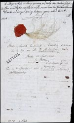

‘Ô bloem der steden’. Bilderdijk en Leiden
Samenstelling: Rick Honings en André Bouwman
De volgende onderwerpen komen aan bod:
1. Bilderdijks leven in vogelvlucht
Willem Bilderdijk werd
geboren op 7 september 1756 in Amsterdam. Hij was een wonderkind, dat
naar eigen zeggen reeds op zeer jonge leeftijd kon lezen en schrijven.
Door een voetblessure groeide hij echter afgesloten van de buitenwereld
op. In 1780 vestigde hij zich voor twee jaar als rechtenstudent in
Leiden. Daarna werd Bilderdijk advocaat in Den Haag, waar hij – met
succes – vervolgde oranjeklanten verdedigde. Na de machtsovername door
de Fransen, in 1795, werd hij verbannen, omdat hij weigerde een eed af
te leggen op het nieuwe bewind. Hij verbleef onder meer in Londen en
Brunswijk, en keerde pas in 1806 naar Nederland terug. Daar trad hij in
dienst van Lodewijk Napoleon. In de jaren die volgden verrichtte
Bilderdijk tal van werkzaamheden, maar het door hem begeerde
professoraat wist hij niet te bemachtigen. Tussen 1817 en 1827 werkte
hij als privaatdocent in Leiden. Zijn laatste levensjaren sleet hij in
Haarlem, waar hij op 18 december 1831, vijfenzeventig jaar oud,
overleed.
|
1.1. J. Hulstkamp, Portret van W. Bilderdijk als advocaat. Naar A. Boon.
Ets en gravure, 1786. [PLANOL 2 A 1: 25/137]. –– Dit portret werd vervaardigd naar aanleiding van het Kaat Mossel-proces in 1785. Het vertoont weinig gelijkenis met andere portretten van de dichter. Bilderdijk was dan ook weinig opgetogen, en beschreef het als ‘Een Wildeman, het dolhuis uitgevlogen’. |
|
 |
|
1.2. L.G. Portman, Portret van W. Bilderdijk. Naar L. Moritz. Stippelgravure, 1806. [PLANOL 2 A 1: 25/138]. –– Toen Bilderdijk uit zijn ballingschap terugkeerde, werd hij geportretteerd. Het resultaat kon zijn goedkeuring niet wegdragen. In een gedicht schreef hij over zijn beeltenis: ‘Een Sukkelaar, die met verwonderde oogen / Om alles met verbeten weêrzin lacht.’ |
|
 |
|
|
1.3. W. Bilderdijk, Ontwerp voor een familiewapen. Houtsnede, [z.j.]. [PLANOL 2 A 1: 25/136]. –– Bilderdijk verbeeldde zich dat hij afstamde van het adellijke geslacht Teisterbant, dat verwant zou zijn aan de legendarische Zwaanridder. Daarom liet hij zich in Brunswijk aanspreken als ‘Herr von Teisterbant’ en ontwierp hij talloze familiewapens. |
|
 |
|
|
1.4. B. Klinkert, Portret van W. Bilderdijk, met doek om het hoofd. Lithografie, 1828. [PLANOL 2 A 1: 25/101]. –– Dit portret toont de dichter waarschijnlijk gedurende zijn Leidse periode als privaatdocent. Binnenshuis droeg hij dikwijls een Turkse wrongel om het hoofd, waarin hij een verhit aarden potdekseltje plaatste, ter bestrijding van zijn zware hoofdpijnen. |
|
 |
|
|
1.5. Haarlok van W. Bilderdijk. [LTK 409]. –– Op dit door Bilderdijk geschreven afschrift van het gedicht ‘Wareld’ plakte J.J.F. Wap een haarlok, die vermoedelijk bij het overlijden van de dichter was afgenomen. Wap schreef er later bij: ‘Bovengeplaatst handschrift en haarlok verklare ik te zyn van Mr. W. Bilderdyk.’ |
|
|  | |
|
1.6. P. Velijn, Portret van W. Bilderdijk op zijn sterfbed. Naar G.J. Michaëlis. Staalgravure, 1833. [PLANOL 2 A 1: 25/93-94]. –– Na zijn overlijden werd Bilderdijk geportretteerd door Gerrit Jan Michaëlis. Deze prent werd gedrukt bij Loosjes te Haarlem. Onderaan staan enige toepasselijke dichtregels van Isaäc da Costa. |
|
 |
|
| vorige pagina | volgende pagina |